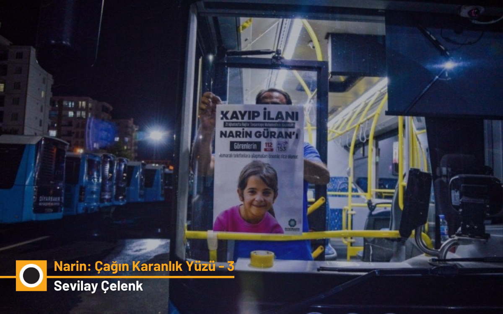

Narin: Çağın Karanlık Yüzü - 3
Linç haberciliği, kumpas yargısı ve Güranlar

Narin Olayında Medya ve Algı
Narin’in kaybı olayına yediden yetmişe ve 7/24 neden kilitlendiğimizi, neden Narin’le yatıp Narin’le kalktığımızı bence artık biliyor olmalıyız. Narin’in kaybolmasını takip eden birkaç gün içinde ailesi korkunç bir gazetecilik ve medya pratiğinin de etkisiyle hedefe oturtuldu. Hiçbir değer tanımayan YouTuBer’lar, TikTok’çular, çok ünlüler ya da az ünlüleri filan bir yana bırakın, bildiğiniz gazeteci muamelesi gören isimler, gazetecilik etiğini ve meslek kodlarını yerle bir eden korkunç bir habercilik yaptılar. Bunlardan hiç ama hiç haberdar değillermiş gibi bir habercilik. Belki de gerçekten haberdar değillerdi.
Medya üzerinde bunca baskıdan ve bunca tahribattan sonra baş başa kaldığımız şey, işte böyle vahim bir gazetecilikti. Bugüne kadar herhangi bir örnek vermek istemedim ama buyrun şimdi lütfen şu haberi[1] ve öncesindeki söyleşileri izleyin. Zavallı Yüksel Anne ne anlatıyor ve o günlerde gündemi epeyce belirlemiş olan gazeteci bunu nasıl aktarıyor… Kızgın ve ön yargılı kalabalıklara gündemin tepesine yerleşme adına ne istiyorlarsa onu veriyor. Başka açıklaması var mı bunun? Yaptıklarını unutturmak istiyorlarsa özeleştiri vermek ve bu tür bir habercilikten dolayı özür dilemek zorundalar.
Ünlülerin Sorumluluğu ve Cinsiyetçi Söylem
Ünlüler demişken, tekrar üretmek istemezdim ama şu paylaşım[2] hala X’te en hafif tabiriyle sorumsuzca tutuluyor. Gördüğünüz gibi, Yüksel Güran henüz bir kez olsun mahkemeye çıkmamış, kendini savunamamış ve başına geleni anlatamamış ama ağır biçimde cinsiyetçi küfürler yeniden yorumlanarak damgalanmış. Paylaşımın sahibi kendisine yönelik giderek artan eleştiriler üzerine sosyal medyada daha dün, “21 Ağustos gününden beri, sadece mahkeme heyetine, ispatlı delillere ve gerekçeli karara inandık” diyordu. Oysa olayın birinci ayında henüz mahkemeye bile çıkmamış ve hakkında tek bir delil bulunmayan Yüksel Güran’ın suçsuz olabileceğini akıldan bile geçirmeden o vahim tiviti paylaşmıştı. Kaldı ki kendine bir tür hak savunuculuğu kadın ve çocuk hakları söz konusu olduğunda bir sorumluluk atfeden hiç kimse suçu sabit olsa bile kimseye karşı bu cinsiyetçi dili kullanamaz. Dünyanın makul herhangi bir ülkesinde dört bir yanda anaokulları filan açan bir kişinin bu dili kullanması ağır tepki görür. Hasılı, Narin’in yaralı ailesinin kalbi üzerinde adeta çivili ayakkabılarla tepinip durdular günlerce, aylarca…
Öte yandan yıllar yılı aile içi her tür şiddeti ve tuhaflığı televizyon dizilerinde günde en az üç saat izleyen bir kitle, Esra Erol türü gündüz programcılığı sayesinde, True Crime’la (gerçek suç öyküsü) tanışalı da çok olmuştu. Post-hakikat çağında gerçeği kurmacadan ayıran sınır da çoktan ihlal edilmiş, üzerinde tepinilen hayatların gerçek hayatlar olduğu bilgisi birçok olayda tümden es geçilmeye başlanmıştı. Narin olayında herkesin bir senaryosu vardı ve herkes kendi filmini çekmek istiyordu. Yüksel Güran kimin umurundaydı?
Gazeteciliğin Sessizliği
Tabii ki birinin bu yaşananları derli toplu ve ayrıntılı olarak anlatması, anlatabilmesi gerekiyordu. Örneğin keşke o coğrafyada itibarlı bir tarihe sahip basın geleneğinden gelen, bölgeyi ve insanını bilen, orada neyin mümkün olup neyin olamayacağını öngörebilen gazetecilerden biri bu konuya odaklanmış olsaydı. Kemal Kurkut’un çıplak hakikatini benzersiz bir kalp gözü ve refleksle yakalayan o muhteşem fotoğrafta olduğu gibi, Tavşantepe’ye nefretle yönelen ve şeytan yakma ayinine dönüşen marazi dikkati de biri görebilseydi… Bu nefreti self-oryantalist bir eğilimle içselleştirmek ya da yaşananlara tümden kayıtsız kalmak yerine, layıkıyla çözümleyebilse ve Narin’in katli olayını bu cinnet halinin dışına çıkarak araştırsaydı.
Zira bir kez daha söylüyorum, bu olay aynı zamanda bir araştırmacı gazetecilik olayıydı. Maalesef uzunca bir zaman kimse araştırmadı. Tıpkı Pierre Bourdieu’nün Televizyon Üzerine adlı eserinde yıllar evvelinden teşhir ettiği, birbirini yansıtan aynalar nevinden bir haber verme işini seçtiler. Bunun adı gazetecilik filan değildi. Özellikle olayın ilk zamanlarında, gazeteci Rojda Altıntaş’ın haklı olarak çekingenlikle yer vermeye çalıştığı çelişkiler ve Nevzat’ın rolünü sorgulatması dışında hakiki hiçbir çaba ortaya koyulmadı.
Yıldıray Oğur kendisine, Fransa’da yüksek lisans yapan Diyarbakırlı Miham Akkul’dan gelen bir mektuba yer vererek ailenin ve köyün suçsuz olabileceğine ilk dikkat çeken kişi oldu. Bu konuda daha sonra Yıldıray Oğur da Mihan Akkul da yazılar yazdı. Ancak bu yazılarda konu asılsız iddialar vs. temelinde iyi ele alınmış olsa da geniş bir kamunun dikkatini çekebilecek ayrıntılı ve derinlemesine bir analiz ya da haberciliğe konu edilmedi.
Yine de Serbestiyet çevresi sonraki dönemde Narin’in ailesine yönelen nefreti ve hukusuzluğu gündeme getirmek yanında, daraltılmış baz gibi sorunlu delillere[3] ilişkin raporlara ve yeni bilgilere hep yer açtı. Bu çok önemli bir çabaydı. Ocak’ta kaleme aldığım Narin’e hakikat borcumuz var başlıklı yazı bu anlamda bir hakikat çölü niteliğinde olan bir medya ortamında yayınlandı. Yayınlandığı mecra dikkate alındığında görece uzun bir yazı olduğunu kabul etmek gerekir. Öyle olmasaydı, yani o mayınlı tarlada yürüme dikkatiyle uzun uzun tartışarak yazılmış bir yazı olmasaydı, muhtemel ki ağır bir linçle hem ben hem yazıyı yayınlayan mecra karşı karşıya kalırdık. Şükür ki o dikkat beni de bianet’i de yeterince acı çekmiş aileyi de korudu.
Olayın Benzersizliği ve Çelişkiler
Şimdi yeniden bu olayın benzersizliği meselesine dönelim. Evlatlarını katleden ve onlara büyük kötülükler yapan aileler var, yok değil. Fakat Narin olayında bu kaba bilgiyi bir açıklama olarak kabul etmemize engel olan o kadar çok, o kadar çok çelişki ve tutarsızlık vardı ki… Sadece üşenmeden bu tutarsızlıkları ve hayatın olağan akışına uymayan çelişkileri ele almak, söylemsel ve zihinsel konfor alanını terk etmek ve sonucu ne olursa olsun bu cesareti göstermek yeterdi. Yani somut delil olduğu söylenen iddiaların, birçoğu erişilebilir durumda olan bilgi ve belgenin incelenmesi ve bunların hemen hiçbirinin delil niteliğinin filan olmadığının görülmesi, bizi o basit hakikate zaten götürüyordu. Ne yazık ki bu yapılmadı. İdeolojik bir konfor alanında kalındı. Büyük güç, büyük para ya da büyük iktidar sahibi olduğu sanılan bir aile bir anda AKP iktidarının, diğer bir deyişle Leviathan’ın simgesel karşılığına dönüştü.
Politik Semboller ve Cinnet Halindeki Tepki
Oysa kısa zamanda ne kadar ama ne kadar sahipsiz olduklarını fark etmemek mümkün değildi. AKP yanında, Hizbullah, Hüda Par, JİTEM gibi başka nefretler de resme eklendi… Tavşantepe ve Güran Ailesi en acımasız biçimde cezalandırılırsa sanki bugüne kadar kaçırılmış bütün fırsatlar telafi edilecekti. Bunu daha evvel yazmıştım. Uzatmayayım. Sanki ilk kez kadın ve çocuk cinayetlerinde cezasızlığın sonu gelmiş, üstelik iktidardan pay alan güçlü bir aile nezdinde katilleri cezalandırma fırsatı doğmuştu ve kimse bu fırsatın kaçırılmasını istemiyordu. Buna izin verilmeyecekti.
Oysa aile bölgenin güçlü ailelerinden biri filan değildi. Bunu da herkesten iyi AKP iktidarının bölgedeki temsilcileri bilebilirdi ki sanırım dakikasında da bildiler ve ağırlıklı olarak kendi seçmen kitleleri olduğu söylenen Tavşantepe Köyü’nü de Güran Ailesini de cinnet halindeki bir medya ve kamuoyu tepkisi karşısında yüzüstü bıraktılar. AKP Diyarbakır Milletvekilinin ne kast ettiğini bugün hâlâ açıklamadığı ve muhtemelen laf ola söylediği bir cümle de ailenin mahvolmasına kayda değer bir biçimde etki etti maalesef. Kısacası Güran ailesinin güvenmek istediği ve güvendiği iktidar-devlet, suretini, Tavşantepe avcılarının önüne bırakarak kendisi ortadan rahatça çekildi.
Kumpasın Tekrarlanan Yüzü
Üstelik aile suçsuzsa -ki sanırım iktidar cenahındaki ilgililerin kanaati bu yöndeydi- davaya müdahil olan deneyimli hukukçular yargı sürecinde bunu görürdü… Gelgelelim evdeki hesap çarşıya uymadı. Böylece, çoğunluğu AKP’ye yakın olan bir köyün sakinlerinin ve yaralı bir ailenin üyelerinin, Aile yılında işkence görmesine ve müebbet hapis cezalarına çarpıtılmasına engel olmadılar. Sözün özü bu da bir tür kumpas davasıydı. Kobanî Kumpas Davası ile yıllar yılı mücadele edenler, burada suskun kalınırsa bu kumpasların bütün toplumu içine alacağını da öngörmüştü. Aslında Gezi Davası da aynı kumpas örüntüsüyle zuhur etmişti. Sanırım hesaba katılmayan şey, artık muhalefet filan demeksizin sıradan her yurttaşın politik değil adli vakalarda bile birdenbire ölçeği devasa büyümüş ve ülke çapına taşmış kumpasların pençesine düşebileceğiydi.
Günler ve geceler süren mahkemeler boyunca Kobanî’de, Gezi’de ya da zamanaşımına uğratılan tüm siyasi davalarda adeta masanın altından tırnak törpüleyerek veya internette keyfince sörf yaparak, adalet arayışı namına bir tutum filan değil sadece ve sadece mevcudiyet sergileyen hakimler, mahkeme başkanları ve savcılardan belki de beklenebilecek pek bir şey kalmamıştı… Yıllar yılı adaleti sağlamakla ilişkili kendilerine hiç bir pay teslim edilmemiş kendileri de bu yetkiyi ellerine almaya kalkışmamış bu hukuk insanlarının adli vakalarda devreye girecek bir adalet refleksi de kalmamıştı.
Esas dehşete düşüren şey ise aynı mahkeme salonlarında yıllar yılı politik davalara müdahil olan avukatların, Narin Davası gibi adli bir vakada yer aldıklarında, güç ve iktidar odaklarıyla özdeşleştirdikleri için mağdur ailenin başına geçirilen çuvalı da kumpası da göremez hale gelmiş olmalarıydı. Onların da benzer bir reflekssizliği sürdürmelerinin ya da sonuç almaya değil performansa ve söylemsel üstünlüğe odaklanan savunmalara sürüklenmelerinin nedeni biraz da burada aranmalıdır.
Eleştirel Bakışın Körelmesi
Eleştirel bakış, orta yerde duran basit hakikati kavramaya ve kabullenmeye yetmeyecek kadar körelmişti. Kameralara konuşmak baskın tavır haline geldi. Siyasi iktidara yönelik dizginsiz öfkeyi Narin’in ailesine yansıtan geniş kitlelere cevap üretme çabası, bir adli vaka olarak Narin Davasında olay örgüsünü bütün çıplaklığı içinde görmeyi de engelledi.
Narin davasının politik karakteri böyle anlaşılmalıdır.